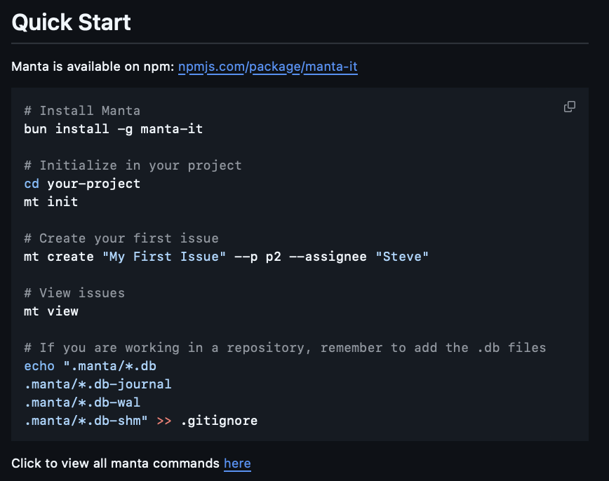

Manta Issue Tracker
Role: Frontend & Documentation | Stack: JavaScript | Timeline: 6 weeks

About
I took CSE 110 during spring quarter and our group was tasked with creating an issue tracker.
My Role
- Researched popular issue trackers and their features
- Implemented the display command
- Tested backend code to ensure smooth performance
Result
We developed a CLI issue tracker that assists developers organizing their workflows and projects. It also works expectionally well with agents.